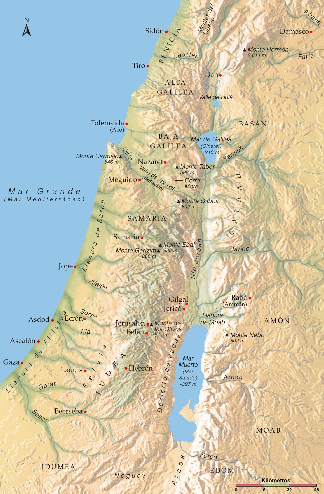

Tres webs nacidas del mismo cariño franciscano por Tierra Santa: la crónica escrita, la oración diaria y el viaje visual. Elige por dónde entrar.

Seis etapas en la historia de los Santos Lugares y la película que las recorre, tal y como se cuentan en Huellas franciscanas.
Recreaciones animadas creadas con IA; no son fotografías documentales exactas. Música: «Ethereal Ascension», Sandra’s Tape.